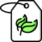

평온한 즐거움이 아니라 떨리는 즐거움을 원합니다. 또한, 부정적 일탈에 빠지 는 사람들에게 가장 필요한 것은 금지나 통제가 아니라 긍정적 일탈입니다. 삶 을 새롭게 만들고 다시 가슴을 뛰게 할 수 있는 도전과 탐험이 필요합니다. 이 러한 긍정적 일탈을 돕기 위해 국 내,외 기차여행 정보를 제공하고 있습니다.
짧은 여행에서는 느낄 수 없는 긴 여행만의 묘미와 깊이가 있습니다. 그래서 인생을 살면서 자주는 아니라도 한 번은 긴 여행을 떠나라고 권하고 싶습니다. 긴 여행은 삶 전체를 새롭게 할 수 있는 영향력을 가지고 있기 때문입니다.

‘휴식’으로의 여행
시간부자란 시간이 많은 사람이 아닙니다. 시간부자란 자신에 맞게 삶의 속도를 조절할 줄 알고, 그 순간에 빠져들어 오염되지 않은 시간을 보낼 수 있는 사람입니다. 그러므로 시간에 대한 도권을 되찾지 못한다면 아무리 시간이 많다고 해도 우리는 온전한 휴식을 취할 수 없으며 타임 푸어가 될 수밖에 없습니다.
‘자유’으로의 여행
우리의 취향은 고정된 게 아닙니다. 여행을 통해 평소에는 관심이 없었던 새로운 취향에 눈을 뜰 수 있습니다. 이탈리아 베로나에서 야외 오페라공연을 보고 감동을 받아 오페라의 세계에 눈을 뜨거나, 미술관에서 강렬하게 말을 걸어노는 어떤 작품을 보고는 그림에 깊은 관심을 가질 수도있습니다.
‘도전’으로의 여행
우리는 도전을 통해 더 성장하기 위해 여행을 떠납니다. 여행을 떠나면 종종 커다란 장애물과 마주할 것입니다. 그 장애물들은 생각하는 것만큼 높진 않습니다. 아니, 당신은 생각하는 것 이상 높이 뛰어오를 것입니다. 우리는 우리가 생각하는 것보다 용기있는 존재들이기 때문입니다.
‘행복’으로의 여행
우리에게는 삶의 의미를 넘어서는 삶의 체험이 필요합니다. 살아 있다는 느낌이 필요합니다. 심장의 두근거림과 가슴의 떨림이 필요합니다. 여행은 우리에게 그런 느낌을 줍니다. 그렇기에 삶이 말라간다고 느낄 때, 죽지 못해 살아간다고 느낄때, 자기를 잃어버렸다고 느낄 때 우리는 여행을 떠납니다.
‘전환’으로의 여행
우리가 여행에서 즐거웠던 것은 오로지 새로운 세계를접했기 때문만은 아닙니다. 감각이 깨어나고, 생각이 깊어졌기에 똑같은 경험이라고 해도 더 깊이 경험할 수 있었기 때문입니다. 여행에서의 예민해진 감각, 여행자 정신을 일상으로 가지고 와야 합니다. 좋은 여행은 정신을 유지하고 일상을 보다 새롭게 볼 수 있게 해줍니다.